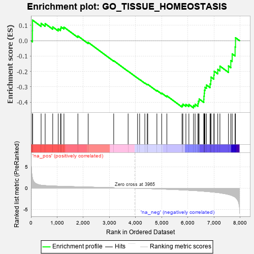
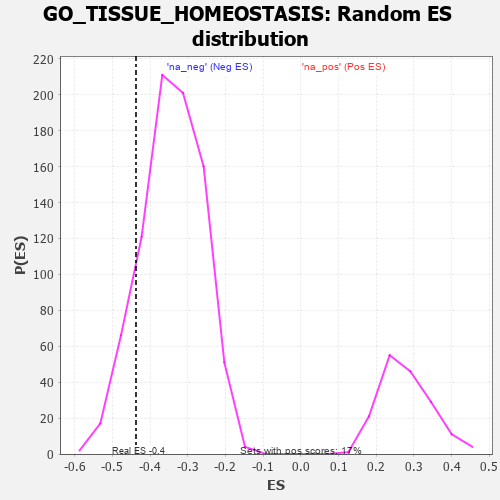

| | | Dataset | 7d |
| Phenotype | NoPhenotypeAvailable |
| Upregulated in class | na_neg |
| GeneSet | GO_TISSUE_HOMEOSTASIS |
| Enrichment Score (ES) | -0.4371556 |
| Normalized Enrichment Score (NES) | -1.2797186 |
| Nominal p-value | 0.12244898 |
| FDR q-value | 0.49701506 |
| FWER p-Value | 1.0 |
Table: GSEA Results Summary

Fig 1: Enrichment plot: GO_TISSUE_HOMEOSTASIS
Profile of the Running ES Score & Positions of GeneSet Members on the Rank Ordered List
| PROBE | GENE SYMBOL | GENE_TITLE | RANK IN GENE LIST | RANK METRIC SCORE | RUNNING ES | CORE ENRICHMENT | | 1 | MC4R | | | 57 | 2.491 | 0.0640 | No |
| 2 | RAC2 | | | 60 | 2.442 | 0.1336 | No |
| 3 | BAX | | | 387 | 0.711 | 0.1128 | No |
| 4 | SRF | | | 542 | 0.615 | 0.1109 | No |
| 5 | LDB2 | | | 831 | 0.523 | 0.0896 | No |
| 6 | YAP1 | | | 1041 | 0.475 | 0.0768 | No |
| 7 | SRC | | | 1128 | 0.459 | 0.0790 | No |
| 8 | VPS54 | | | 1148 | 0.454 | 0.0896 | No |
| 9 | WDR36 | | | 1260 | 0.437 | 0.0881 | No |
| 10 | STRAP | | | 1793 | 0.339 | 0.0307 | No |
| 11 | SYK | | | 2186 | 0.278 | -0.0108 | No |
| 12 | GCNT2 | | | 3162 | 0.128 | -0.1302 | No |
| 13 | NF1 | | | 3713 | 0.040 | -0.1985 | No |
| 14 | CSF1 | | | 4074 | -0.019 | -0.2434 | No |
| 15 | WNK3 | | | 4153 | -0.034 | -0.2522 | No |
| 16 | ADRB2 | | | 4352 | -0.068 | -0.2753 | No |
| 17 | LAMC1 | | | 4445 | -0.084 | -0.2845 | No |
| 18 | ERCC6 | | | 4464 | -0.087 | -0.2843 | No |
| 19 | P2RX4 | | | 4813 | -0.161 | -0.3236 | No |
| 20 | PROM1 | | | 4996 | -0.197 | -0.3409 | No |
| 21 | SMO | | | 5195 | -0.247 | -0.3588 | No |
| 22 | CIB2 | | | 5774 | -0.398 | -0.4204 | No |
| 23 | BBS4 | | | 5806 | -0.407 | -0.4127 | No |
| 24 | STK11 | | | 5922 | -0.443 | -0.4145 | No |
| 25 | RAC1 | | | 6036 | -0.484 | -0.4149 | No |
| 26 | LCA5 | | | 6213 | -0.540 | -0.4217 | Yes |
| 27 | STK39 | | | 6274 | -0.563 | -0.4132 | Yes |
| 28 | BBS2 | | | 6383 | -0.608 | -0.4095 | Yes |
| 29 | BBS1 | | | 6397 | -0.616 | -0.3935 | Yes |
| 30 | CSK | | | 6428 | -0.630 | -0.3792 | Yes |
| 31 | MKS1 | | | 6607 | -0.715 | -0.3813 | Yes |
| 32 | TUB | | | 6611 | -0.718 | -0.3611 | Yes |
| 33 | CUBN | | | 6624 | -0.727 | -0.3419 | Yes |
| 34 | WWTR1 | | | 6631 | -0.729 | -0.3218 | Yes |
| 35 | USH1G | | | 6654 | -0.740 | -0.3034 | Yes |
| 36 | EGFR | | | 6708 | -0.765 | -0.2882 | Yes |
| 37 | PTH1R | | | 6845 | -0.839 | -0.2814 | Yes |
| 38 | ABCA4 | | | 6872 | -0.851 | -0.2603 | Yes |
| 39 | IQCB1 | | | 6882 | -0.856 | -0.2370 | Yes |
| 40 | NPHP4 | | | 6991 | -0.931 | -0.2240 | Yes |
| 41 | CCR2 | | | 7003 | -0.939 | -0.1985 | Yes |
| 42 | WHRN | | | 7139 | -1.025 | -0.1862 | Yes |
| 43 | CNGB1 | | | 7222 | -1.096 | -0.1652 | Yes |
| 44 | LAMA2 | | | 7549 | -1.468 | -0.1644 | Yes |
| 45 | CROCC | | | 7639 | -1.628 | -0.1291 | Yes |
| 46 | MDM1 | | | 7691 | -1.742 | -0.0857 | Yes |
| 47 | MUC2 | | | 7802 | -2.066 | -0.0405 | Yes |
| 48 | TRAF6 | | | 7818 | -2.157 | 0.0193 | Yes |
Table: GSEA details [plain text format]

Fig 2: GO_TISSUE_HOMEOSTASIS: Random ES distribution
Gene set null distribution of ES for GO_TISSUE_HOMEOSTASIS